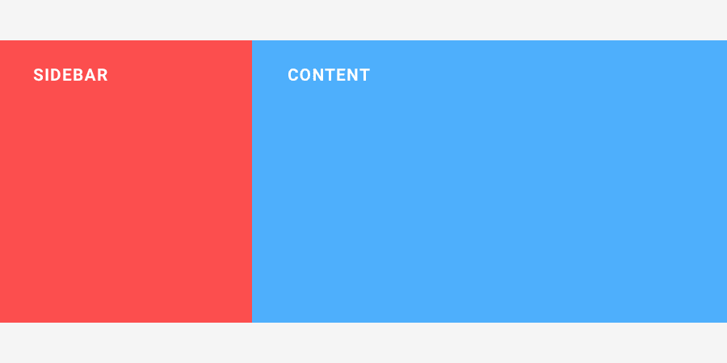
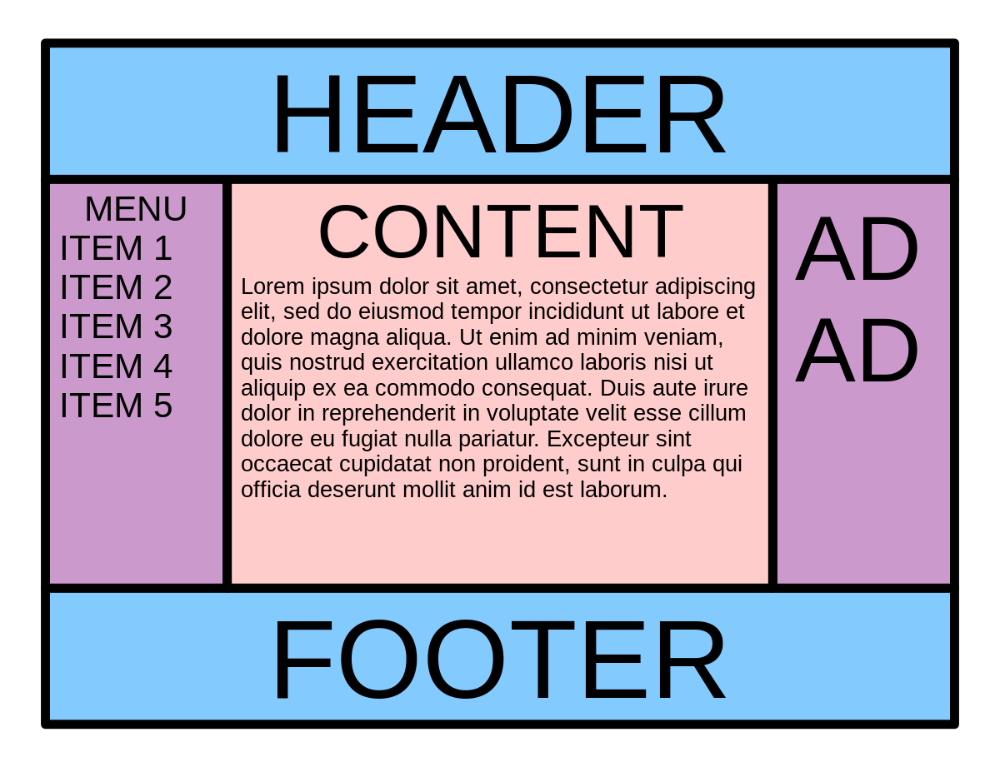

Box Model in CSS
The box model in CSS refers to how elements are rendered as rectangular boxes, consisting of content, padding, border, and margin.

The box-sizing property defines how the total width and height of an element are calculated. The default value is content-box, where the width and height only include the content, excluding padding and border. Setting it to border-box includes padding and border in the width and height calculations.
Clearfix Hack
The clearfix hack is a CSS technique used to fix the issue of a container not expanding to contain its floated children.

This hack is applied to a parent element containing floated children by adding a clearfix class or using the ::after pseudo-element with clear: both property.
Margin Collapse
Margin collapse is a phenomenon in CSS where the margins of adjacent elements collapse into a single margin under certain conditions.

Use cases for margin: auto include centering an element horizontally within its container. Negative margin values are often used for creating overlapping effects or adjusting spacing between elements.
Holy Grail Layout
The Holy Grail layout is a common web design pattern consisting of a header, footer, and three columns with a main content area in the center.

The problem with achieving the Holy Grail layout traditionally was maintaining equal height columns without using hacks like faux columns or JavaScript.
Modern ways to achieve the Holy Grail layout include using flexbox or CSS grid layout, which provide more robust and flexible solutions without relying on hacks.